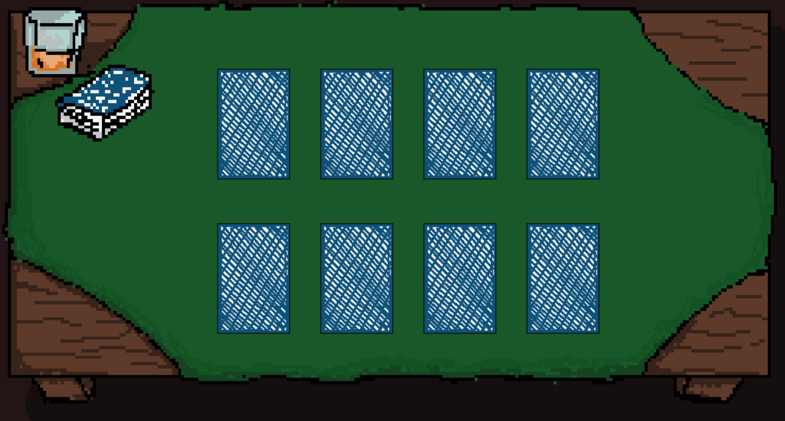

FlickIt
A memory game to train
coordination and attention
Designed thinking about people with Multiple Sclerosis
A simple game, but very useful
Find the pairs of cards. When you find a pair, a mole appears unexpectedly: hit it quickly to keep your score!
Commands reduced to a minimum, customizable times, high contrast, clear texts: everything is designed to be as accessible as possible.

Details thought for you
Identity
It represents the uniqueness of each player: the game adapts to individual capabilities.
Determination
Indicates the strength and perseverance in overcoming daily difficulties.
Mind
Represents mental training and concentration.
Community
Symbol of sharing and mutual support.